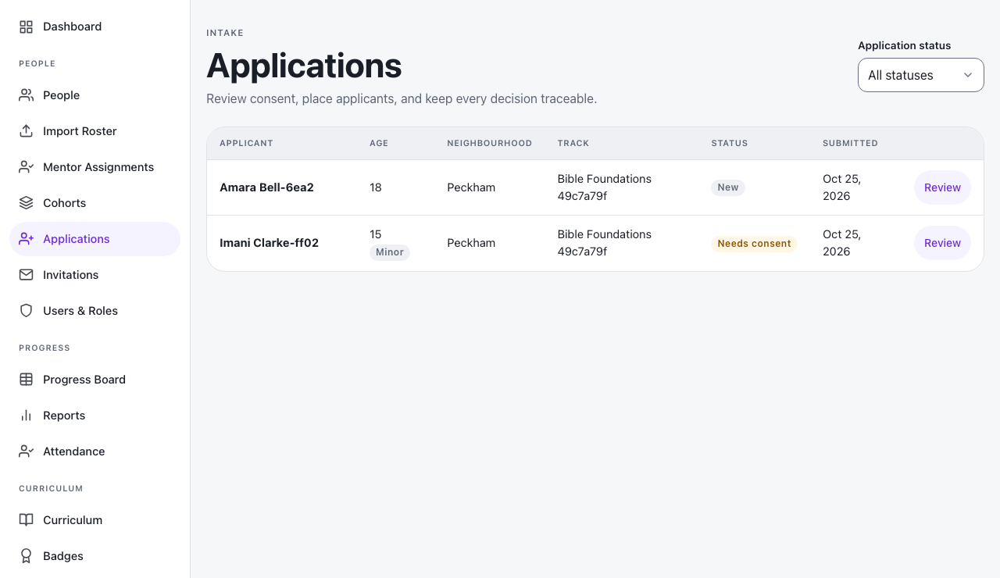
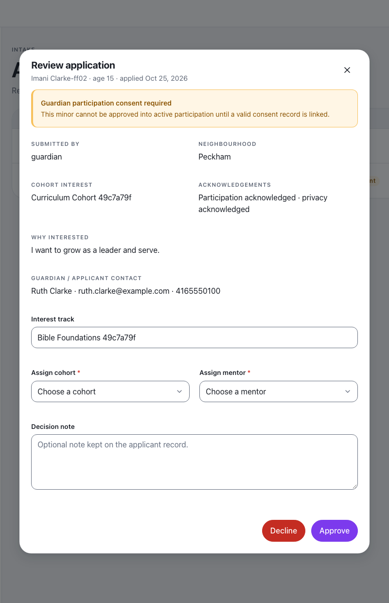
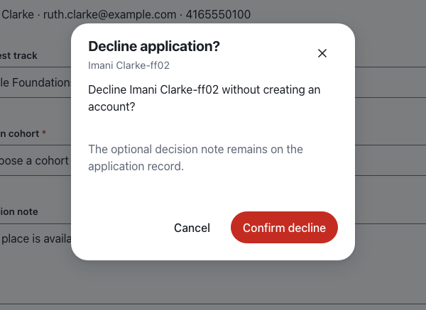
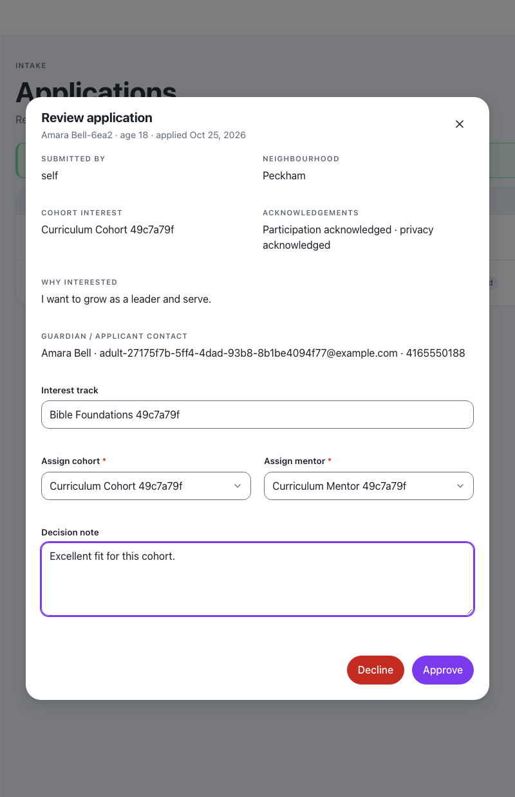
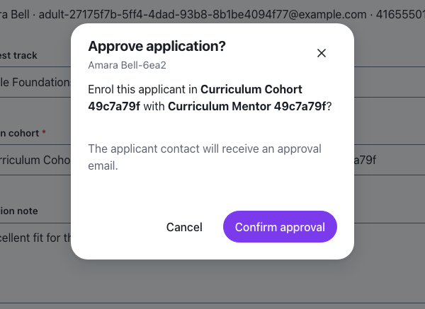
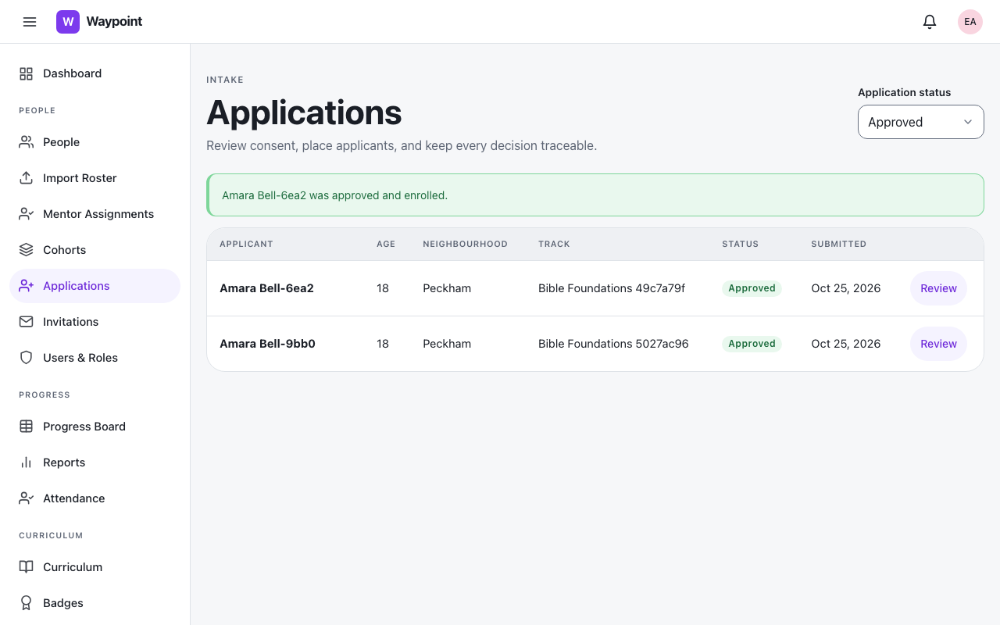

Waypoint · Journey 09
Review and place
From the application queue to a placed youth
Every application in one queue

New, and needs consent
Consent comes before taking part

Waypoint enforces the rule
A soft decline

No account is created
Track, cohort and mentor

Cohort and mentor are required
Confirm the enrolment

The applicant contact receives an approval email
Approved and enrolled

Account created, youth enrolled
Things to remember
- Minors are clearly marked
- No guardian consent means no approval
- A decline is soft, and an approval needs a cohort and a mentor
- Every decision is audited